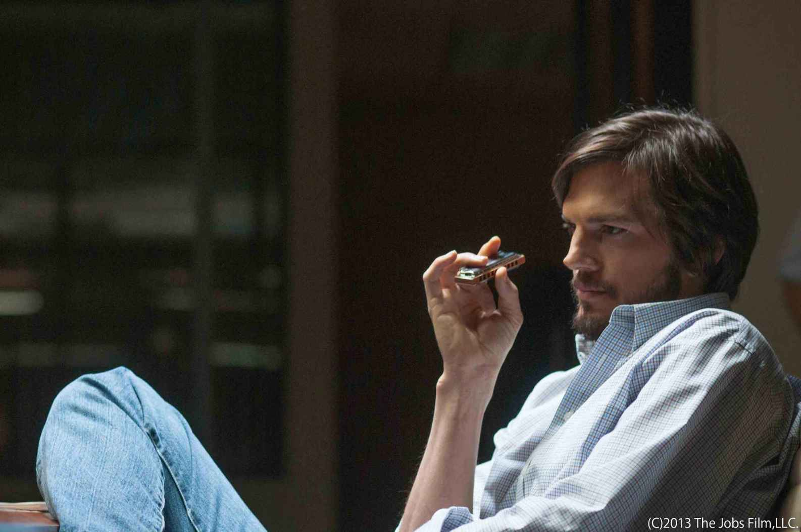

| 【eiga.book 電子版】Vol.1 ベネディクト・カンバーバッチ饒舌インタビュー | |
| 映画.com編集部 & 渡辺麻紀（映画ライター） | |
| eigadottokomu (2013) | |
Credits:
この本は、映画情報サイト「映画・ＣＯＭ」が初めて作った電子書籍です。
その記念すべき第１作目で大フィーチャーするのは、ご存知「今が旬」の男ベネディクト・カンバーバッチ。ロンドンで、ロサンゼルスで、そして東京でと、合計６回にわたるインタビューを敢行したライターの渡辺麻紀氏が、これまで他のメディアでは書けなかった内容も含め、その饒舌な発言をたっぷり披露、彼の素顔に最接近します。
さらに、夏から秋にかけて日本で公開されるハリウッド映画のうち、映画・ＣＯＭ編集部が厳選した作品をずらりご紹介。また、11月公開の話題作「スティーブ・ジョブズ」の内容も、リーク気味にお届けします。
電子書籍を作るにあたり、過去に私たちがムック本を作っていたときに使っていた「eiga.book」というタイトルを復活させました。私たちにとっては、とても愛着のあるタイトルです。
それでは、お楽しみください！
ベネディクト・カンバーバッチ――「スター・トレック イントゥ・ダークネス」で共演し、彼の友人でもあるアリス・イブは「私と対照的に世界でもっとも難しい名前」と言って笑った。だが、この「難しい名前」の英国俳優が、日本のみならず世界で大旋風を巻き起こしている。その勢いはブームを通り越し、もはや社会現象レベル。「スター・トレック」が公開されたあとには、ジョニー・デップ（なんて憶えやすい名前！）と並ぶほどの知名度になっているにちがいない。
なぜ、それほどまでにベネディクト・カンバーバッチは注目されることになったのか？ 言うまでもなくそれは英国のテレビシリーズ、あの名探偵の活躍を現代のロンドンに移し替えた「ＳＨＥＲＬＯＣＫ シャーロック」のタイトルロールがハマり過ぎていたからだ。自分を"高機能社会不適合者"だと言ってはばからない頭脳明晰すぎるスーパー変人を、あたかも自分そのもののように演じ、世界を熱狂させたのだ。そのベネディクトがハリウッドに、いや世界に王手をかけたのが「スター・トレック イントゥ・ダークネス」なのである。
このインタビューは、筆者がこれまで行った「スター・トレック」の６回に及ぶ単独＆グループ・インタビューを"「スター・トレック イントゥ・ダークネス」について"、"演技全般について"、"日本のファン、自身の家族について"と３項目に分けて総括的にまとめたもの。すでに他誌で書いた記事も多々あるものの、初出しになるネタもいくつかある。彼のあふれ出る言葉の数々から、その知性と魅力をかみしめてもらえれば、そして彼の素晴らしい人となりが伝われば、こんなに嬉しいことはない。（映画ライター・渡辺麻紀）
ベネディクトはとてもよく喋る。驚くほど喋りまくる。初めて会ったときは、そのマシンガントークに唖然。日本でインタビューする場合の多くはインタビュアーが質問し、それを通訳さんが訳し、タレントが答え、また通訳さんが訳すを繰り返すのだが、中断されるのを嫌う彼の場合は同時通訳。ひとりで喋り、ひとりで突っ込み、ひとりで納得し、ひとりで笑う。しかも、話があっちこっちに飛んで行く！ が、面白いもので、その様子が何ともチャーミング!!――というか、そんなポジティブな見方って彼のファンだからこそ？ 少なくとも、インタビューを仕切っている映画会社の方たちは大変そうだったが。
さて、そんなわけで「スター・トレック」のベネディクト。たとえ娯楽大作、たとえ準備期間が短かろうと全力投球で仕事したことがヒシヒシと伝わってくるはずだ。そして、初めてのハリウッド大作の現場を楽しんだことも。
――「スター・トレック イントゥ・ダークネス（以下ＳＴＩＤ）」に出演した経緯を教えてください。
「確か２０１１年の冬、それもクリスマス・ホリデーの真っ最中だったと思う。突然エージェントに、「ＳＴＩＤ」の話があるからデモテープを送るよう言われたんだ。ホリデーの真っ最中だったから、ちゃんと撮影なんてできない。演じるシーンだけの脚本コピーと、その状況の説明だけを聞き、友人に頼んでiPhoneで撮ってもらい、それを送ったよ。ＯＫを貰ったのは年が明けてから。クランクインまであと２週間というくらいギリギリに（出演が）決まったんだ」
――あなたを選んだのは監督のＪ・Ｊ・エイブラムス（以下Ｊ・Ｊ）だと聞いています。彼はあなたを「現存する役者のなかで最高のひとり」だと言っていました。
「Ｊ・Ｊがそんなことを？ きっと彼は僕に"Ｊ・Ｊは最高の監督だ"って言わせたかったんだよ（笑）。そんな策略を使わなくても、僕は彼を素晴らしい監督のひとりだと思っているけどね。
確かにＪ・Ｊは『シャーロック』の僕を見て、とても気に入ったと言ってくれた。僕が知られるようになったのは第２シーズンのオンエアが始まってからで、当時のハリウッドじゃ僕のことなんて誰も知らなかったんじゃないかな？ だからＪ・Ｊはスタジオの人たちを説得するためにも僕のデモテープが欲しかったんだと思う。
でも、僕はデモテープを見てもらって本当によかったと思っている。というのも僕は、オーディションも何もなく"君ならこの役を演じられるはずだ"というふうに期待されるのが大嫌いでね。判るかな？ もちろん、仕事をオファーされるのはとてもとてもありがたいことだよ。でもその仕事を、何もせずに貰うのはイヤだ。本当にできるのだろうかと不安になるし、僕は自分の力でその仕事を勝ち取りたいんだよ。だから今回、オーディションをやってもらって本当によかったんだ」
――そもそも「スター・トレック」シリーズに親しみはあったのでしょうか？
「テレビでオンエアしていたら見ていた、という感じだろうか。自分から積極的に見ていたわけじゃない。一応、基礎知識程度はわかっているつもりだけどね。でも、Ｊ・Ｊが監督した最初の『スター・トレック』は偶然にも封切ったときに見ていた。『スター・トレック』だからというわけじゃなく、周囲の評判がよかったからだ。実際、よくできた映画だと思ったけれど、まさか自分がそのシリーズの一員になるとは思っていなかった。おかしいよね（笑）。いま話してて気づいたんだけど、好きな映画って何度も見直したりするじゃない？ 僕の場合はスタンリー・キューブリックなんだけど。で、その回数で言うとＪ・Ｊの『スター・トレック』も人生でもっともたくさん見た映画の１本になるんじゃないかなあ。公開のとき、オーディションの話をもらったとき、出演が決まってから行ったロサンゼルスで３回くらい。両親と一緒に見ただけで３回もあるし、日本に来る前にも見た......で、何回だ？ ざっと数えても９回だよ！ 驚いたな。ってことは一番好きな映画になるのかな（笑）」
――ジョン・ハリソンというキャラクターをどう思いますか。
「僕はこのジョン・ハリソンというキャラクターをとても気に入っている。いうなればサイコロジカル・テロリスト。心理的なチェスのように相手をジワジワと追い詰める。そこに、自分の性格が反映している――なんて言うのはないことを祈るけど（笑）、ハリソンのテロ行為にはちゃんと理由がある。彼には守らなければいけない世界があり、友人たちがいて、そのために戦っている。そういう意味ではただ方向性が違うだけで、カークやスポックらと何ら変わらない。彼らにとっては悪の戦士かもしれないが、違う者にとっては自由の戦士なんだ。そういうレイヤーのある悪人、いわゆる勧善懲悪的な悪ではないキャラクターを演じるのは役者として、とてもやりがいがあったね」
――反対に、感情移入できなかった部分もあるんじゃないでしょうか。
「やはり手段として暴力を選ぶところだよね。自分がマイノリティであり、非常に抑圧され、その苦痛と葛藤が暴力に走らせたとしても、やはり暴力を許すことはできない。とりわけジョン・ハリソンの場合は、人並み外れた知力体力があり、その力を駆使するときは熟考しなければいけないはずなのにやっていない。彼が暴力を選んだという部分は、ひとつの教訓として受け止めるべきなのかもしれないよね」
――ジョン・ハリソンはテロリストです。彼のそういう部分と現実のテロリズムを考えたりしたのでしょうか。
「とても意識した、というのが僕の答えになるだろうね。実際、ニュースで報道されるようなテロリストやテロリズムというものからヒントを貰って役作りをしてはいるが、あくまで謹んで向き合ったつもりだ。こういうブロックバスター・ムービーにそういったシリアスな問題を取り入れるときは、真摯な姿勢が大切だと思っているから。
それにしても毎日、新聞を広げて驚かされるのは、そのテロリズムの多さだよ。世界に存在するテロリズムというのは、大軍がマイノリティの罪のない人たちを殺害することから生じるパターンが多い。そこから激しい盲目的な怒りが生まれ、その結果テロリストが出現するんだ。そういう現状を考慮して作られたのが『ゼロ・ダーク・サーティ』のような映画なのだと思うけれど、『ＳＴＩＤ』のスターフリートの存在は、アメリカの過去、そして現在の軍事的、あるいは政治的な立ち位置を象徴しているのだとも思うよ......って何だか政治社会学専攻の大学院生のようなことを喋ってしまって申し訳ない......いや、何が大学院生だ。偉そうな物言いだよね。大学生というべきだった。いやまあ、話はそれてしまったけれど、こういうエンタテインメント重視の映画にも、現実社会のリアリティは大きな影響を及ぼすわけだよ」
――本格的なアクションも初めてなのでは？
「そうなんだ。これまでもアクションの経験はあるし、役のために身体を作ったこともある。しかし、これほどまでのビッグスケールは初めてだった。役者になって初めてファイトトレーニングをやった。カメラのためにやる、バレエとカンフーを美しく融合したような"ハリウッド・フー"とでもいうべきパンチも覚えた。ジョン・ハリソンは超人的な知力と体力をもっているという設定だから、アクションシーンにリアリティを加えるため、身体も鍛えることにした。鶏肉ばかりを食べて１日４０００キロカロリーも摂ったせいで、スーツのサイズが３段階もアップしたよ。おかげでアクション・シーンになるとカメラが退いて、スタントダブルに代わるなんて情けないことにならずにすんだんだ」
――一番、自分らしさが出たシーンはどこでしょうか。
「エンタープライズ号に捕まったジョン・ハリソンが、そのテロ行為の理由を語るシーンだろうね。初めて脚本を読んだときからこのシーンには惹かれていた。なぜなら、僕が舞台で培ってきたスキル、つまり"声"が重要になると思ったからだ。果たして自分の声を使って何ができるのか？ 僕はこれまでそれをずっと試してきたし、声の重要性は判っているつもりだ。そもそも、役作りをするとき、そのキャラクターの声をどうするかは僕にとって大きな問題だからね。
で、ジョン・ハリソンの場合はまず、そのバックボーンを考えた。普通の育ち方をした者なら、その声や喋り方に育った環境の影響があるはずだ。でも、特異な生まれ方や育ち方をしたハリソンの場合は、経験と環境が声や喋り方に影響を及ぼしたとは考えづらい。つまり、彼ならば特定のアクセントなどはなく、どこか機械的かつ人工的な喋り方をするのではないか、そう考えたんだ。だから、あのシーンではできる限りトーンを落とし、抑制を効かせて喋っている。そして、もっとも重要なのは、その声によって、ガラスの仕切りの向こう側にいるカークの頭のなかに、自分の考えを植えつけなくてはいけないこと。それによって、彼より自分を優位に立たせなければいけないことなんだ。そういう意味でも、あのシーンでの"声"は非常に重要な意味をもっていた。
そのシーンを演じるとき、僕はみんなから離れた場所でひとりになり、心を限りなくストイックにして挑んだ。ジョークの飛び交う現場は、つきあいやすい人たちに囲まれ、非常に居心地のいい空間となっていたからこそ、あえてそういう状況に自分を置くことが必要だったんだ」
――現場のみなさんは２本目の「スター・トレック」で、すでに強い仲間意識があったと思います。新参者のあなたは、そんな彼らからどんな歓迎を受けましたか？
「もちろん、みんなからこっぴどい"歓迎"を受けたよ。そう、まんまと騙されたんだ。彼らのいたずらにひっかかったんだよ。問題は、撮影が行われた場所にもあった。サンフランシスコのＮＩＦ（National Ignition Facility／レーザー核融合実験施設)という、新しいエネルギーの開発研究をやっている施設だったんだ。僕はその日、おそらくいつかノーベル賞を取るだろうエド・モーゼスという素晴らしい博士を紹介してもらい、その施設の装置にがぜんリアリティが加わっていたんだ。そう、その施設のなかには、手を触れると自分が蒸発してしまいそうなモノがあるかもしれないと、本当に思えてしまったんだよ！
さらには、僕たちの面倒をみてくれるスタッフのひとりが、中性子を振り落とす体操を始めた。撮影の合間にみんなを集め『さあ、みんなでやろう！』と声をかけ、局部をぼりぼり掻いたり、痰を吐き出したり。僕は『やっぱり本当なんだ』という感じで、それに習うしかなかったわけだ。
こうやって話しながら、自分の愚かさを少しでも軽くしようと努力しているのだが、それができないくらいに僕は愚かだったんだ。このいたずらは手が込んでいて、誰かが"免責承諾書"なる書類までもってきた。そこには"私は、この環境のなかに身体的危機が伴う要素があることを認識している"という内容が、法律用語を使ってまことしやかに書かれていた。いたずらを仕掛けた連中は、僕が書類を読み『これはおかしい』と気づくというシナリオだったようなのだが、愚かなことに、僕は書類に目を通さなかったんだ！ 目を通すことなくサインをしてしまったんだよ。そう、だから、いたずらは長引いた。今度は"中性子クリーム"なるものを渡され、それを顔にぺたぺたとつけなくてはいけないと言われた。もちろん、僕はそれを実行したさ」
――あなたにいたずらするため、みんなが一致団結していたんですね。
「うん、みんながね。帰宅するときクリス（・パイン）は"何だか気分が悪いよ"なんて言って、僕は本気で"もしかしたら彼には腫瘍ができているんだろうか......"と不安になったりしたくらいで。まったく！ このいたずらの主犯はサイモン（・ペッグ）だよ。あいつはいじめっ子だ！」
――そんなアメリカ人のスタッフ＆キャストと一緒の現場で、自分がイギリス人だと痛感する瞬間はありましたか。
「それはなかったなあ。僕はアメリカ流の撮影が凄く好きだったし、アメリカで暮らすのも楽しかった。さっきも言ったように、素晴らしい歓待を受けたし（笑）、自分がイギリス人なのだと意識させられることはなかった。山高帽に雨傘を振りながら、果たして今日は雨が降るんだろうか、などと空を見上げるようなイギリス人の気分にはならなかったよ。映画製作を通して、僕がアメリカ文化の一部であることを非常に楽しんだね」
ベネディクトの喋りがもっとも止まらないネタといえば演技について。演劇界ではすでにローレンス・オリビエ賞を受賞したりと確かなキャリアを築いていることからも判るように、そのルーツは英国役者らしく舞台にある。だから当然、自分の演技には強いこだわりがあり、喋りだすと止まらない。
だが、ファン的にはやはり声である。あるときは低く、またあるときは甘くと、まさに自由自在。よどみなく言葉を繰り出すなかで突然、声のトーンを変えてシェイクスピアの台詞を引用したりと、サプライズの連続でもあるのだ。
ちなみに、４度目くらいのインタビューでは長く喋りすぎるのはよくないと気づいたのか、ちょっと抑え気味。しかし、演技の話になるとやっぱり止まらない。で、最後に「ごめん。また喋りすぎちゃった」とテレ笑いのベネディクトだった。
――あなたの場合、この役を自分のものにしたという瞬間は、どういう手応えを感じるのでしょうか。
「ジョン・ハリソンの場合で言うと、このキャラクターの役作りに当てられた時間はわずか２週間しかなかった。だから、ハリソンをすっかり自分のものにしてカメラの前に立ったわけではなかったんだ。そこで自分の取った手段は、演じながら徐々に進化させる。つまりハリソンに近づけて行く。手応えを判りやすくいうならば"ハリソンの鼓動を感じる"、ということになるかな。とことんキャラクターに集中し、それと純粋なかたちで絡む、そういう言い方もできるかもしれない。とはいえ、すべてのシーンでハリソンになっているかというと、実は違う。おそらく監督のＪ・Ｊも、観客のみなさんも気づかないだろうけど、演じた僕には"ハリソンからちょっと離れている"という演技は判るんだ。恥ずかしい話だが、出来上がった映画のなかにそういう瞬間があったんだよ」
――本作の脚本家デイモン・リンデロフは、あなたはカメラのまえに立つと、あっという間にハリソンになる。一方、ダニエル・デイ＝ルイスは24時間、６カ月もリンカーンになりきって演技している。あなたのほうが凄いと言っていましたが。
「いや、デイ＝ルイスは凄いよ。僕のヒーローのような存在だしね。彼は、いわば役者の特権階級にいるようなもので、役作りに思いっきり時間を費やせる。それは役者としてはひとつの理想だと思うんだ。僕は今回、24時間、ジョン・ハリソンになりきったわけじゃなく、おっしゃる通りカメラの前だけハリソンだった。そう、"今回は"そうやったんだ。というのも、演技にはさまざまな種類があり、演技における正解や真実とは非常に主観的なものであって客観的ではない。役者によってはもちろんのこと、その作品や演じるキャラクターによっても大きく変わってくるわけだしね。
メリル・ストリープと『August: Osage County』という映画で一緒に仕事をさせてもらい、彼女の演技を間近で見るチャンスに恵まれたんだが、これが本当に凄い。役柄的にもさまざまな側面をもった女性だったとはいえ、声ひとつアクセントひとつをとっても、そのときの感情によってまるで違うんだ。そうだな......たとえて言うなら、いろんな音符といろんな音程があり、オーケストラの演奏を見ているというか聴いているかのようだった。僕はそんな彼女に『どんなスキルをお持ちなのですか？』と訊ねたんだけど、メリルの答えは『ないわ。あなたは持っているの？』だった。僕はこの答えを聞いてホッとしたんだよ。メリルの答えはつまり、毎回毎回、仕事の内容は異なるので、その仕事に合わせたやり方を探すということ。持っている既成のスキルを使うんじゃないんだ。デイ＝ルイスは素晴らしいし、僕のヒーローには違いないが、僕の場合はメリルに近い演じ方なんだと思う。ちょっと関係ないんだけど、メリルと初めて会ったとき"うちの家族はみんな、あなたの『シャーロック』に夢中よ"って言われたんだ。とても嬉しかったよ（笑）」
――メリルの声について、ジョン・ハリソンの声についても話していますが、あなたにとって"声"はスペシャルのように思えます。
「そうだね。自分の声で何ができるのか、これまでもずっと実験してきたからね。というのも、声だけでもいろんな感情を表現できるからだよ。たとえばシェイクスピアだ。彼の戯曲で登場人物の感情を表現するときはおおむね母音で入る。『ああ、この固い肉体が溶けて、分解して露となればいい "O, that this too too solid flesh would melt, Thaw and resolve itself into a dew!"』（『ハムレット』からの引用）、あるいは『ああ、馬と引き換えに王国をつかわすぞ "O, my Kingdom for a horse."』（『リチャード三世』より引用）というふうにね。『ああ』で始まり、ここから感情を顕わにすると言っているわけなんだ。それと同時に徐々に子音が消えて行き、より感情的になる。思考や論理から自分を解き放つとき、そうやって母音を使うんだよ。
アメリカ英語は母音が中心で、感情主体のカルチャー、イメージ主体のカルチャーが存在し、それは広大な風景とそのなかの孤独というイメージに象徴されていると思う。一方、イギリスはもっと閉鎖的な印象が強く、言葉もより文学的で知性的なのかもしれない。それはイギリス英語が子音中心だということからもわかると思う。もちろん、英国のバックグラウンドにはシェイクスピアやチョーサーの存在があることは無視できないだろうね」
――「ＳＴＩＤ」で経験したグリーンバックの撮影はいかがでしたか？
「初めての経験だったけれど、とても楽しめたよ。実際にはそれほどグリーンバックの撮影はなくて、大きなシーンといえばあのスペースライドくらいだった。自分の想像力を駆使してそのシーンに挑むわけなんだが、出来上がりをみると、その想像力のお粗末さを思い知るという感じだよ（笑）。ＶＦＸによってさまざまな要素が付け加えられたシーンは、想像を遥かに超える素晴らしさだったから」
――「ホビット スマウグの荒らし場」ではスマウグとネクロマンサーを演じていすが、スマウグは声だけでなく演技も？
「うん。声だけでなくスマウグを演じ、それをパフォーマンス・キャプチャーで取り込んだ。『ＳＴＩＤ』のグリーンスクリーンも遊んでいる感覚があったが、その意味でいうとパフォーマンス・キャプチャーのほうが断然強い。
僕は、非常に魅力的なグレーのライクラ（伸縮性に優れた合成繊維）に白のドットのついたＣＧＩ用のスーツ、顔にもドットをつけた状態で撮影に挑んだ。その何もない空間はボリュームと呼ばれるところで、僕はそこでただただ楽しめばいい。まるで子ども時代に戻ったかのように、思いっきり遊べばいいんだ。自分でも驚くほど自由にやれて、自分でも驚くほど楽しかった。文字通り、自分自身と自分のイマジネーションしかない。そしてそこにピーター（・ジャクソン監督）がいるという感じ。パフォーマンス・キャプチャーで味わった自由というのは、とても貴重な体験だった。
――スマウグはドラゴンですが、どうやってドラゴンの演技を？
「そう、不思議だよね（笑）。でも、スマウグの動きと感情は僕の身体と表情。僕が二足歩行の爬虫類で、火を吹き、空を飛べるドラゴンを確かに演じているんだ。僕はそのスマウグをやるまえに、光栄なことにアンディ・サーキス（『ロード・オブ・ザ・リング』シリーズ、今回の『ホビット』シリーズでゴラムをパフォーマンス・キャプチャーで演じている）の演技を見ることができた。マーティン（・フリーマン／『ホビット』の主人公ビルボ・バギンズ役）と洞窟のなかで"なぞなぞ"をやっているシーンだよ。ピーターが編集段階の映像を見せてくれたんだけれど、本当に凄かった。パフォーマンス・キャプチャー用のスーツを着たアンディの演技が始まってものの５秒で僕の視界から彼の姿は消えた。もうゴラムそのものになっていたんだ！ 凄いよ、僕は本当に興奮してしまったよ。あの動き、あのパフォーマンス、声だってとんでもなく素晴らしい。いいヤツだとか、かわいそうだとか、憎々しいとか、怖いとか、もうあらゆる感情を揺さぶられる演技なんだ。彼の『猿の惑星 創世記』は見たかい？ あれも本当に素晴らしかった。動物にあれだけの人間性をもたせ、しかも成長させているんだからね。彼がオスカーにノミネートされなかったのが本当に不思議だよ――と話はまたも長くなったが（笑）、僕はアンディの演技に非常に刺激を受けたということなんだ」
――ジョン・ハリソンにスマウグ、そしてネクロマンサー、さらには「The Fifth Estate」ではウィキリークスの創設者ジュリアン・アサンジを演じています。カリスマ性のあるキャラクターを得意としているように思えますが。
「『シャーロック』のスティーブン（・モファット／シリーズのクリエーター）には、"これからはカリスマ性のある役しか演じられないだろう"などという奇妙な予言をされたが、僕自身はそうは思っていない。先ほどのメリルと共演した『August: Osage County』で演じたのは37歳にもなってニートな男で、早くもスティーブンの予言を裏切っているわけだ。僕の演じたその男は納屋に住んでいる愛すべきヤツ。何の特技もないが、ピアノを弾いて唄ったりしている。
役者とは常に変化を求めるものであって、カリスマ性のあるキャラクターばかりなど、あるはずがない。インディペンデント系からブロックバスター系。どちらにも興味はあり、ラジオドラマも好きだし、舞台はいわずもがな。もちろん『シャーロック』だって、テレビのミニシリーズだって大好きだ。僕はこれからも、自分のフィルモグラフィーをよりバラエティに富んだものとすべくがんばるつもりだよ」
――仕事をする上、演技をする上での座右の銘のようなものはありますか。
「仕事には、常にプロとして向かい合うこと。自分がその仕事をできることの幸運を忘れないこと。いま任されている役がどれだけ自分を成長させてくれるのか、そのありがたみを知ること。モットーは、学び続けること、耳を傾け続けること、目上の人、同僚を常にリスペクトすること。常に仕事には準備万端で臨むこと。そうすれば、おのずといい仕事が舞い込んでくるはず......だと思っているんだけれどね（笑）。残念なことに、一言で言い表せるような言葉を僕は用意していないから、こんなダラダラした答えになってしまった。申し訳ない」
――あなたは舞台やテレビではすでにさまざまの賞を受賞していますが、映画でもそういうかたちでのブレイクを考えていますか。
「いや、考えてはいないよ。そもそも僕はクリティック（批評）やプライズ（賞）というものにあまり興味がない。そういうことに使う時間やお金があるのなら、舞台のひとつ、映画の１本でも作ったほうがよっぽど建設的だと思うんだけどね。とはいえ、そんなことを言いつつも、僕が何か大きな賞を頂き、壇上で嬉しそうにニコニコしている姿がメディアに流れたりしたら、"アイツ、あのとき興味ないなんて言っていたのに"なんて思われるんだろうな（笑）」
ベネディクトのママは「謎の円盤ＵＦＯ」でヴァージニア・レイク大佐を演じたワンダ・ベンサム。これだけで「おお！」と思うおたくな中年男子はたくさんいるはず。そんなママと、テレビを中心に活躍する役者パパの一人っ子だったベネディクトはたいそう愛情をかけられ育ったようす。だからなのか、とてもお行儀がいい。チョコプレッツェルを食べるときにはちゃんと膝にナプキンを敷き、大好きなベリーを前に「おお！ ベリーだ。誰が置いてくれたんだろう。手を洗わなきゃ」といって石鹸で（！）しっかり洗い、ひとつひとつ素手でつまんで口のなかに。来日時には、浅草で食べたらしい"大福"らしきお菓子を気に入っていたが、それも手を洗って食べたのかと思うと"らしいな"と笑ってしまう。彼の「お坊ちゃん度」、いや「英国のお坊ちゃん度」が高くなってしまうのだ。
というわけで、彼の言葉からベネディクトの素顔を感じ取ってほしい。
――２０１２年12月の来日、そしてこの１３年７月の来日と、確実にファンが増えているのがわかります。今回は前回の倍である１０００人が空港であなたを出迎えました。
「最初の来日のときは、本当に予想さえしてなかったので圧倒されてしまったよ。まさにスペシャルな瞬間だったと言えるだろうね。日本には、英国にまで会いに来てくれる熱心な方がいるということは知っていたので、少しくらいはファンが待っていてくれるかもしれない――なんて話していたんだ。飛行機の機内ではジャージを着ていて、そのまま出るつもりだったんだけど、カメラマンが来ているはずだから着替えたほうがいいって言われて。でも、実際はそれどころじゃなくて、僕としてはただただ驚くばかりだった。本当にソーシャルネットワークの力というのは凄いよね。
今回（７月）の来日でも歓迎を受けて、気分が高揚するというか、本当に素晴らしいと思った。僕のファンのみなさんは常識があってチャーミングで優雅な方が多いんだけど、とりわけ日本の方々はそこに礼儀正しさが加わっていて、本当に凄いなあと思ってしまうんだ。ただ、みなさんがあまりに熱心に応援してくれるのを見ると正直、ちょっと心配になることもある。いろんなところで同じ女性を見ることもあり、彼女は大丈夫なのかな、僕にそんなに時間とお金を費やして、ちゃんと仕事はできてるのかしら、なんて感じで。僕のことより、もっと有意義に時間とお金を使ったほうがいいのではと声をかけたくなってしまうんだ。あとは前回と同じ、ソーシャルネットワークの力。この前の記者会見で僕が"Ｊ・Ｊに愛を送って！"と言ったら、みんなすぐに反応してくれた。驚くばかりだよ」
――あなたは、ファンのTwitterを怖がっていた時期があったと聞いたことがあるのですが。
「ああ、『シャーロック』で人気が出始めたころね。でも、今はもう大丈夫。Twitterは、何かの大義を人々に広めるための素晴らしいツールだとは思う。多くのフォロワーがいて、重大な目的があったり、みんなが興味を持つような何かがあれば。そして、そこに行けない人たちがアクセスできるという便利さや楽しさがあれば、確かにそれは素晴らしいと思う。でも、自分に向いているかというと、そうでもない。だってほら、僕はこんなに喋っているだろ？ おそらく４行（１４０文字）以内でつぶやくというのは、僕が選ぶツールじゃないってことなんだよ（笑）」
――基本的なことをお伺いしたいのですが、そもそも役者になったのは、同じ職業だったご両親の影響だったのでしょうか。
「両親は僕を役者にだけはしたくなかったんだ。なぜなら、とても大変な仕事であることを一番よく知っているからだ。だから彼らは、演技以外、僕がどんな仕事に就いても大丈夫なように最高の教育を受けさせてくれた。本当にありがたいと思っているんだ。だけど、僕が魅了されたのは演技だったんだよ。父も母も、あらゆる手を使って役者を諦めさせようとした。でも、僕は聞く耳持たずでひたすら演技にのめり込んでいったんだ。大学時代、父が『アマデウス』でサリエリを演じた僕の舞台を見て、こう言ってくれた。『おまえは、これまで私がやったどんな演技よりも、そしておそらく、これからやるだろうどんな演技よりも上手い。この仕事を続けるべきだ。素晴
らしいキャリアを築くことになるだろうし、演技をとても楽しむことができるだろう』ってね。男が自分の人生で口にするだろう最高の言葉を、息子の僕に言ってくれたんだ。僕は父の言葉を聞いて泣いた。そして、この仕事を続ける決心をしたんだ」
――ご両親は、いまのあなたの成功をとても喜んでいらっしゃるでしょうね。
「そう、とても喜んでくれている。父も母も、まだ現役で仕事をしているんだけれど、僕の身にいま起こっていることを、まるで自分たちのことのように感じてくれている。朝、ベッドから起き上がったとき、両親が誇りに思っているだろう仕事をやっていると感じられるのは、僕の人生における大きなモチベーションのひとつだよ」
――ご両親との印象的な思い出があれば教えてください。
「そうだね......僕が幼いころ、父はいつもベッドで本を読んでくれていた。『バーバパパ』や『くまのプーさん』とかをね。でも、そんななかで一番記憶に残っているのは『ホビットの冒険』だったんだ。おそらく７歳だと思うよ。８歳のときにはもう寄宿舎に行っていたから、うん、やっぱり７歳だ。僕は父に"パパ、さあ、やって。ゴラムをやって"ってせがんでいたんだ。父は声色を使ってゴラムを演じてくれた。凄くうまかったよ。もちろんアンディ（・サーキス）とはまったく違うけど、本当に上手くて、僕はドキドキしっぱなしさ。あと、覚えているのはスマウグ。その怖ろしさ、美しさ、威厳や虚栄心、そういうのを強く覚えている......そう、だから、面白いと思うんだ。僕が『ホビット』に出て、しかもそのスマウグを演じるなんて。そうやって物事は回っているのかと思うよ」
――お母様のことは？
「母は......母は料理が得意なんだ。僕が帰るといつも、僕の大好きなロースト・ディナーでもてなしてくれる。イギリスの定番料理だけどね。肉はポークのときもあればビーフやチキンのときもある。でも、やっぱりチキンが一番多いかな。僕はチキンが好きだから。
チキンのときはヨークシャー・プディングは合わせない。僕が好きなのはタラゴンと白ワインで作ったクリームなんだ。そして軽く茹でた新ジャガ。ローストポテトじゃないよ。あとは長ネギとサボイ・キャベツ（ちりめんキャベツ）。キャベツの場合、僕は少量のワインで蒸すのが好み。蒸すと歯ごたえが残る。アルコールのほのかな渋味、そしてあとから加えるバターがキャベツの自然な甘みを引き出してくれるんだ。最後に挽きたてのブラックペッパーを忘れちゃいけない。そしてオムレツ。母のオムレツも大好物だ」
――ギャップ・イヤー（高校卒業から大学入学の間、あるいは大学卒業から社会人になるまでの間にとる長期間の休暇）のことを教えてください。チベットに行って英語を教えていたんですよね？
「いや、インドだよ。インド北東の西ベンガル。ダージリン・ヒマラヤ鉄道の駅があるソナダという小さな村のチベット仏教の僧院で英語を教えていた。その資金はアルバイトして貯めた。信じられないところだった。茶畑の並ぶ平地、雲海、ヒマラヤの麓、窓からはカンチェンジュンガ（世界第３位の高峰）も見ることができた。その風景たるや、素晴らしいなどという言葉で表すことが難しいほどだった。
ここで学んだことは、いまの僕にも大きすぎるくらいの影響を与えている。深遠な幸福と深遠な孤独、人生で多々ある大きな岐路、エキサイティングなことが起きるときもあれば、何も起きない日もある......そういうことを少しは悟ることができたように思う。毎日、仏教の儀式が行われるなか、修行に励む仏教僧を見ていた。瞑想もした。帰国する前の２週間はずっと瞑想所に滞在して、集中すること、外界をシャットアウトすること、邪念を排除すること、自分の本質を見つめること、そんな多くのことを学んだ。そんななか、演技というのは、常に今を生きることであり、言い換えれば未来も過去も存在せず、あるのは現実だけ......そんなことにも気づかされた。僕の欠点は気が散ってしまうことで、いまだにそういう部分はあるんだが、このときの経験のおかげで大幅に改善できたんだ」
――仕事が忙しくなって、世界中を飛び回らなければいけなくなったと思います。そういう今の状況をどう感じていますか。
「とても楽しんでいる。アメリカで『ＳＴＩＤ』のアクションシーンを撮って、そのあとすぐにニュージーランドに行き『ホビット』でパフォーマンス・キャプチャーの演技をする。そういう連続はとても刺激的だった。『August: Osage County』はオクラホマ州でロケをし、僕は出番は少ないながら１カ月半もそこにいたんだ。その間、現地の人たちとふれ合い、彼らの文化に浸ったんだけれど、それもまたとない経験だった。おそらく君は、僕が各国を飛び回ることでカルチャー・ショックを受けたり、居心地の悪さを感じたりするんじゃないかと思っているんだろうけど、それはまったくない。アーティストにとってカルチャー・ショックというのは、そこから何か引き出せる状況のことを言うんだと、僕は思っている。世界を回ることでいろんな人たちと出会い、同じ演技を生業（なりわい）にしている人たちと知り合うけれど、みんな目指しているものは同じなんだ。アーティスティックな誠実さを求め、できる限り"完璧"というゴールに近づこうと努力している。そうやってみると、役者というのは"さすらいの吟遊詩人"なんだと思ってしまうね」
――どんな映画がお好きなんでしょうか。
「う―――ん......そういう質問が一番苦手なんだよ。まず『スター・トレック』だろ（笑）。あとはそうだな、今の気分でいうと『ベルリン天使の詩』や『パリ、テキサス』のビム・ベンダース作品。『ゼア・ウィル・ビー・ブラッド』も大好きだ。そして、絶対はずせないスタンリー・キューブリック。彼の作品はほんと、何度も何度も繰り返し見た。最高なのは、やっぱり『２００１年宇宙の旅』だと思うな」
――ご自分の性格をどう分析しますか？
「それって、僕がシャーロックのように歪んでいるか知りたいから（笑）？ どうなんだろう......役者というものは、自分の引き出しのなかからそのキャラクターに合っているだろうアイテムを取り出して演じている。そうやって役作りし、キャラクターを自分のものにする。ときに声を変え、身体を変化させ、肌の色、階級を考えながらそのキャラクターを作って行く......と、まるで僕は君の質問を回避しているかのような回答をしているよね（笑）。だからつまり、僕は、あまり忍耐力のないときがある。物事をクリアに見つめたいという欲求は強い。というか、シャーロックを演じるようになってその欲求がより強くなったことは自覚している。シャーロックは人格障害、作品で言うところの"高機能社会不適合者"で、演じているうちに自分にその要素が伝染した......そういうふうには考えたくはないなあ。シャーロックだけではなく、ほかのキャラクターも演じているわけだし......だから、その答えはよく分からないんだ（笑）」
――ファンにはどういうふうに呼ばれたいですか？ 日本ではブラッド・ピットは"ブラピ"、レオナルド・ディカプリオは"デカプ"というふうに短縮形の愛称で呼ばれているんです。
「ベネディクトじゃダメなの？」
――もちろんいいんですが、日本では人気者になると愛称はマストなんです。『ホビット』の監督、ピーター・ジャクソンだって"ピージャク"って呼ばれているんですよ！
「そうなの？ うーん......じゃあ頭文字をとって"ＢＣ"はどう？ うん、ＢＣがいいな。ＡＤ（紀元後）、ＢＣ（紀元前）で覚えやすいじゃない？ これから"ＢＣ"って呼んで（笑）！」
取材・文 渡辺麻紀
雑誌編集者を経て映画ライターに。「TV Bros」「ＳＦマガジン」「アニメージュ」などで活躍中。ＳＦ、ファンタジー、ハリウッドの特撮、アニメーションなどの作品に、特に造詣が深い。尊敬する映画人はレイ・ハリーハウゼン、ティム・バートン、リドリー・スコット、サム・ライミ、そして押井守など。腐女子物件に強く、男の友情ものにもヨワい。しゃぶしゃぶが好物。
今年の夏休みは、ハリウッド映画の大作が映画館を彩った。そして、これから秋にかけても、ハリウッド映画はどんどん日本にやってくる。ここでは、８月下旬から11月にかけて日本で公開されるものから編集部が厳選した10作品をご紹介。
なお、各作品紹介のＵＲＬは、映画・ＣＯＭ内にある作品ページにリンクしています。作品ページでは、予告編や映画評論など、より詳細な情報をご覧になることができます。
「ホワイトハウス・ダウン」 ８月16日公開
「インデペンデンス・デイ」「２０１２」のローランド・エメリッヒ監督が、謎の組織にホワイトハウスが乗っ取られ、ワシントンＤＣが危機に陥る様子を描くアクション大作。議会警察官のジョン・ケイルは、大統領のシークレットサービスになるため面接試験を受けるが不採用となってしまう。幼い娘をがっかりさせたくないと、ジョンは娘をホワイトハウスの見学ツアーに連れ出すが、その時、謎の武装集団がホワイトハウスを襲撃、占拠するという前代未聞の事態が発生する。政府が大混乱に陥る中、ジョンは大統領や娘、そして合衆国の命運をかけた戦いに身を投じる。主人公の警察官ジョン・ケイル役に「Ｇ．Ｉ．ジョー」のチャニング・テイタム、米大統領役に「ジャンゴ 繋がれざる者」のジェイミー・フォックス。
映画・ＣＯＭ作品ページhttp://eiga.com/movie/58261/
「スター・トレック イントゥ・ダークネス」 ８月23日公開
Ｊ・Ｊ・エイブラムス監督によりリブートされた人気ＳＦシリーズ「スター・トレック」（２００９）の続編。前作に引き続きエイブラムスがメガホンをとり、クリス・パイン、ザッカリー・クイント、ゾーイ・サルダナらメインキャストも続投。テレビシリーズ「ＳＨＥＲＬＯＣＫ シャーロック」でブレイクした英俳優ベネディクト・カンバーバッチが、冷酷な悪役ハリソン役で登場する。西暦２２５９年、ジェームズ・Ｔ・カーク率いるＵＳＳエンタープライズは、未開の惑星を調査中に陥った予期せぬ危機から脱するため、重大な規則違反を犯す。無事に地球へ帰還できたものの、カークは艦長職を解かれてしまう。そんな時、ロンドンの艦隊基地が爆破される事件が発生。艦隊士官のジョン・ハリソンという男が真犯人であることが判明する。すぐさまハリソンを捕らえるよう命令が下るが......。
映画・ＣＯＭ作品ページhttp://eiga.com/movie/55158/
「マン・オブ・スティール」 ８月30日公開
「ダークナイト」のクリストファー・ノーランが製作、「３００ スリーハンドレッド」のザック・スナイダー監督のメガホンでリブートされた新たな「スーパーマン」。無敵の能力を備えながらも、それゆえに苦悩して育った青年クラーク・ケントが、いかにしてスーパーマンとして立ち上がったのか、これまで描かれてこなかったスーパーマン誕生の物語を描く。クラーク・ケント＝スーパーマンに、新鋭ヘンリー・カビルを抜てき。育ての親ジョナサン・ケントにケビン・コスナー、生みの親ジョー＝エルにラッセル・クロウ、ヒロインのロイス・レーンにエイミー・アダムス、仇敵ゾッド将軍にマイケル・シャノンなど豪華キャストが集結。脚本に「ダークナイト」３部作のデビッド・Ｓ・ゴイヤー。音楽も「ダークナイト」や「インセプション」など、近年のノーラン作品を手がけているハンス・ジマーが担当。
映画・ＣＯＭ作品ページhttp://eiga.com/movie/53194/
「サイドエフェクト」 ９月６日公開
スティーブン・ソダーバーグ監督が引退作と公言する１本。薬の副作用が招いた殺人事件と、その事件に潜む陰謀を描いたサスペンス。幸福な生活を送っていたエミリーは、夫がインサイダー取引で収監されたことをきっかけに、かつて患ったうつ病が再発。精神科医のバンクスが処方した新薬により、うつ症状は改善されたものの副作用で夢遊病を発症し、やがて無意識状態のまま殺人を犯してしまう。主治医としての責任を問われ、社会的信頼を失ったバンクスは、エミリーに処方した新薬について独自に調査を開始。やがて衝撃的な真実にたどりつく。バンクス役のジュード・ロウ、エミリー役のルーニー・マーラほか、キャサリン・ゼタ＝ジョーンズ、チャニング・テイタムら豪華キャストが集う。ソダーバーグの社会派作品「インフォーマント！」「コンテイジョン」も手がけたスコット・Ｚ・バーンズが脚本を担当。
映画・ＣＯＭ作品ページhttp://eiga.com/movie/77977/
「ウルヴァリン：SAMURAI」 ９月13日公開
「X-MEN」シリーズの人気キャラクターでヒュー・ジャックマンが演じるウルヴァリンを主人公とした「ウルヴァリン：X-MEN ZERO」（２００９）の続編。カナダで隠遁生活を送っていたウルヴァリンは、ある因縁で結ばれた大物実業家・矢志田に請われて日本を訪れる。しかし、重病を患っていた矢志田はほどなくして死去。ウルヴァリンは矢志田の孫娘マリコと恋に落ちるが、何者かの陰謀により不死身の治癒能力を失うというかつてない状況に追い込まれる。日本が主な舞台となり、本格的な日本ロケも敢行された。マリコ役のＴＡＯ、ウルヴァリンを日本へと導くユキオ役の福島リラ、矢志田の息子シンゲンを演じる真田広之ら、日本人キャストも多数出演。監督は「ウォーク・ザ・ライン 君につづく道」「ナイト＆デイ」のジェームズ・マンゴールド。
映画・ＣＯＭ作品ページhttp://eiga.com/movie/77469/
「エリジウム」 ９月20日公開
「第９地区」のニール・ブロムカンプ監督がマット・デイモンを主演に迎え、富裕層と貧困層に二分された世界を舞台に描くＳＦサスペンスアクション。２１５４年、人類はスペースコロニー「エリジウム」に暮らす富裕層と、荒廃した地球に取り残された貧困層とに二分されていた。地球に住む労働者で、事故により余命５日と宣告されたマックスは、エリジウムにはどんな病気でも治すことができる特殊な装置があることを知り、厳しい移民法で出入りが制限されているエリジウムへ潜入を試みる。エリジウム政府高官役でジョディ・フォスターが共演。「第９地区」のシャルト・コプリーも出演。
映画・ＣＯＭ作品ページhttp://eiga.com/movie/58255/
「トランス」 10月11日公開
「スラムドッグ＄ミリオネア」「１２７時間」のダニー・ボイル監督が、「X-MEN：ファースト・ジェネレーション」のジェームズ・マカボイを主演に迎え、記憶を失った男の潜在意識から消えた絵画を探しだす様子を、スタイリッシュな映像と音楽で彩り描くサスペンス。競売人（オークショナー）のサイモンは、ギャングと結託してオークション会場からゴヤの名画「魔女たちの飛翔」を盗み出すが、計画とは違う行動をとったためギャングのリーダーに殴られ、その衝撃で記憶が消えてしまう。ギャングのリーダーは催眠療法（トランス）を使い、サイモンが隠した絵画の場所を探ろうとするが、サイモンの記憶にはいくつもの異なるストーリーが存在し、探れば探るほど危険な領域に引きずり込まれていく。共演にバンサン・カッセル、ロザリオ・ドーソン。脚本には、「シャロウ・グレイブ」や「トレインスポッティング」といったボイル監督の初期作品も執筆したジョン・ホッジが参加している。
映画・ＣＯＭ作品ページhttp://eiga.com/movie/78755/
「僕が星になるまえに」 10月26日公開
テレビシリーズ「ＳＨＥＲＬＯＣＫ シャーロック」でブレイクし、「スター・トレック イントゥ・ダークネス」などにも出演する英俳優ベネディクト・カンバーバッチが、末期ガンに冒された青年役で映画初主演を果たしたドラマ。末期ガンのため死が近づく青年ジェームズは、３人の親友に「世界で一番好きな場所」に連れて行ってほしいと頼む。親友たちは、体の自由が利かなくなってしまったジェームズをカートに乗せて旅立ち、やげて目的地にたどり着いたジェームズは、人生で最後のある決断を下す。ハッティ・ダルトンの長編監督デビュー作で、カンバーバッチほか、Ｊ・Ｊ・フィールド、トム・バーク、アダム・ロバートソンが共演。
映画・ＣＯＭ作品ページhttp://eiga.com/movie/78962/
「パーシー・ジャクソンとオリンポスの神々 魔の海」 11月１日公開
人間と海神ポセイドンの血を引く「半神半人（デミゴッド）」の少年パーシー・ジャクソンの活躍を描いたファンタジー「パーシー・ジャクソンとオリンポスの神々」（２０１０）の続編。封印された先代の神々の王クロノスの復活を阻止するため、パーシーは魔の海に隠された黄金の毛皮を探しに行くことに。そんなパーシーの前に、弟を名乗る目が一つだけのサイクロプスが現れ、ともにギリシャ神話の魔物たちがはびこる魔の大海原バミューダトライアングルへと乗り込んでいく。主演のローガン・ラーマンほか、共演のアレクサンドラ・ダダリオ、ブランドン・Ｔ・ジャクソンも再集結。監督は「グレッグのダメ日記」のトール・フロイデンタール。
映画・ＣＯＭ作品ページhttp://eiga.com/movie/57680/
「スティーブ・ジョブズ」 11月１日公開
２０１１年に死去したアップルの創設者、スティーブ・ジョブズの生涯を描く。大学を中退し禅や仏教に傾倒しながらも、無為の日々を送るジョブズは、親友のウォズニアックの趣味であるコンピュータに興味を持つ。２人は友人たちの協力を得て世界初の個人向けマシンApple Iを商品化。ジョブズは自宅ガレージを改造して、ウォズニアックらとアップルコンピュータを設立する。ジョブズは社長として経営に辣腕をふるい、77年にApple IIを発売、大ヒットとなる。25歳にして成功を手中にしたジョブズだったが、そのときから周囲との軋轢に苦しみ、挫折と栄光を味わうことになる。若きジョブズそっくりと言われていたアシュトン・カッチャーを主演に迎え、共演はダーモット・マローニー、マシュー・モディーンらベテラン陣。監督は「ケビン・コスナー チョイス！」のジョシュア・マイケル・スターン。
映画・ＣＯＭ作品ページhttp://eiga.com/movie/78309/
ハリウッドはＩＴ業界と隣接していながら、近親憎悪のような振る舞いを時々見せる。一昨年の「ソーシャル・ネットワーク」が格好のサンプルだ。そこに描かれたのは、20代半ばにしてビリオネア、だけど訴訟まみれで心を許せる友達は３人しかいないというギークな男。フェイスブックのＣＥＯマーク・ザッカーバーグが、現実とはだいぶかけ離れたキャラクターとして描かれていた。２０１１年、スティーブ・ジョブズが亡くなった時、複数のジョブズの伝記映画の企画が発表された。そんな中、あるインディーズのスタジオがジョブズ映画をいち早く作り上げ、全米公開に漕ぎつけた。タイトルはズバリ「スティーブ・ジョブズ」、日本での公開は11月。さて、ジョブズはどんなふうに描かれたのか？ 映画・ＣＯＭが最速レビューを試みる。

アップルは特殊な会社だ。彼らのコアバリューは「クリエイティビティー」、平たく言えば「デザイン」である。これは、ＧＡＦＭＡ（グーグル、アップル、フェイスブック、マイクロソフト、アマゾン）と言われるアメリカのトップＩＴ企業の中にあって、ひときわ異彩を放っている。ちなみに、すべてのアップル製品の裏側には、Designed by Apple in California. Assembled in China.と書いてある。組み立ては中国だが、大事なデザインは、カリフォルニアのアップル社が行っているのだと誇らしげに。
Apple II以降、iPhoneやiPadに至るまで、スティーブ・ジョブズが生み出してきたデバイスは、確かにどれも美しく、そしてシンプルだ。洗練の極みにあると言っても過言ではない。それを販売する世界中のアップルストアにしても、とてもエレガントでセンスのいい、快適な空間になっている。
では、ＧＡＦＭＡの他の４社はどうだろう？ グーグルやアマゾンは、そのサービス規模の割に、デザイン面では残念ながらＢクラスと言っていいだろう。マイクロソフトにしても、近頃はだいぶ垢抜けてきた印象だが、ビル・ゲイツの時代はひどかった。ジョブズも「彼らの抱えている問題はただひとつ、美的感覚がないことだ。足りないんじゃない。ないんだ」と自伝で語っているほど。フェイスブックは、まあ悪くはないが、マーク・ザッカーバーグのおなじみのパーカー姿に象徴されるように、ファスト・ファッションという印象だ。
この映画、「スティーブ・ジョブズ」にはいくつかの見所があるが、そのひとつは、こうしたジョブズのデザインへのこだわりだ。大学時代にカリグラフィーに熱中したこと。コンピューターもフォントが美しくなければだめだという持論。映画の後半には、ジョナサン・アイブも登場して、iMacのデザインについてジョブズと議論する。クリエイテビティーの発露。才能とエネルギーがほとばしる。
一方で、「現実歪曲フィールド」という言葉とともに語られるジョブズの暗黒面については、やや描写は控えめという印象だ。全編を通して、ジョブズは「嫌なヤツ」というよりは「分別のあるヤツ」として描かれている。これは、制作陣がジョブズの遺族とアップルに気を遣った結果か、あるいは、そもそもジョブズをリスペクトしすぎていたか。そこら辺、「ソーシャルネットワーク」なんかと比べてみると、ちょっと物足りない。どう考えてもザッカーバーグよりはジョブズの方が非常識な人物のはずなのに。
ウォズことスティーブ・ウォズニアックとジョブズとの関係性も印象的だ。プロダクトを作るのはウォズ、それを高く売るのはジョブズという明確な役割分担が潔い。ウォズの他にも、ダニエル・コトケやマイク・マークラ、ジョン・スカリーといった、アップル創成期になくてはならない人物たちが次々に登場し、ジョブズとの関係が描かれる。古くからのアップルユーザーにとっては、わくわくするシーンの連続だ。
そして、ジョブズその人を演じるアシュトン・カッチャー。実は、彼のなりきりっぷりがこの映画の最大の見所かも知れない。いきなり、オープニングのiPodのプレゼンテーションで「おお」と唸らせる。両手を身体の前で合わせ、ちょっと猫背で歩く姿はジョブズそのものだ。なんでも、３カ月にわたってジョブズの映っているフッテージを見まくり、綿密に役作りをしたそうだ。
ツイッターで１４５０万人のフォロワーを持つカッチャーは、仲間たちと投資会社を経営しており、フォースクエア、スポッティファイ、エアＢ＆Ｂといった名だたるＩＴ企業に投資しているという。
さながら「ＩＴアクター」、いや「ベンチャー・キャピタル・アクター」だ。10年前からアップルの株主でもあるという。そりゃあ、この役にのめり込むはずだ。
本編で描かれるのは、ジョブズがアタリに出入りしていた70年代初頭から、一度追い出されたアップルに復帰してＣＥＯに就任する２０００年ぐらいまで。「ソーシャル・ネットワーク」のアーロン・ソーキンが脚本を書く、上下２巻の自伝の映画化とはまた別の作品である。そう、ジョブズの映画は他にも企画があるのだ。
ともあれこの「スティーブ・ジョブズ」という映画、アップル製品を愛用しているユーザーなら是非見てもらいたい。その製品が、凡百の家電メーカーが作った製品とは志が違うということがお分かりいただけるだろう。この映画を見た後、あなたのiPhoneなりMacBookは、より愛しいものになっているはずだ。
アップル製品は何であれ、「世界をよりよくする」ために作られている。ジョブズの崇高なビジョン、偏執狂的なこだわり、不屈の闘争心は、世界を変えるためのものだ。そしてジョブズの開発した製品で、明らかに世界は変わった。Apple II、Mac、iMac、iPod、iPhone、iPad......何度も変わった。
私は、この映画を見た日の夜から、上巻の途中で放り出していた「スティーブ・ジョブズ」（講談社・刊）を引っ張り出して読み始めた。映画では描かれていない、細かい話の数々が実に面白い。ジョブズがアップルを出た後に立ち上げたＮｅＸＴのことや、ジョブズが買収したピクサーのエピソードもかなり凄い。改めてこの本を原作に映画化されるアーロン・ソーキン版も非常に楽しみだ。そしてなんと、この秋には「スティーブ・ジョブズ１９９５ 失われたインタビュー」というドキュメンタリーも公開されるという。
ジョブズ伝説は終わらない。だって「世界を変えた男」なんだから、永遠に伝説だ。（映画・ＣＯＭ編集長・駒井尚文）
著者 映画・ＣＯＭ編集部 渡辺麻紀（映画ライター）
企画 駒井尚文 本田敬
製作 上田知彦 荒木理絵
作品データ 浅香義明
写真コーディネート 政氏裕香
発行者 駒井尚文
発行所 エイガ・ドット・コム